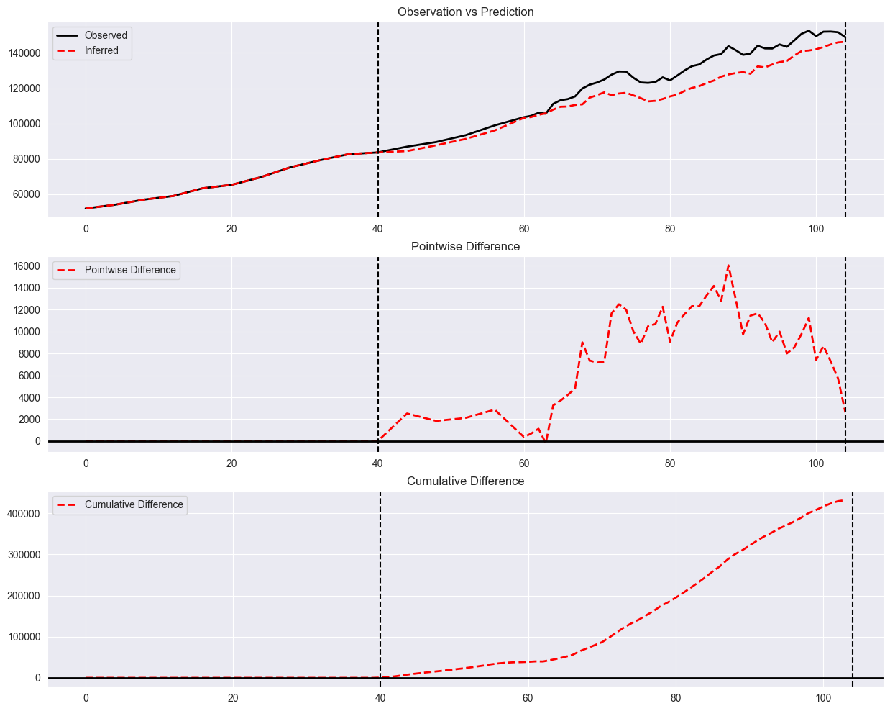

Experimental Design Deep Dive (#1)
In this notebook, we will elucidate various methodologies for designing and analyzing experiments, specifically A/B tests, using panel data, employing an illustrative example.
Panel data typically comprises a collection of time series data pertaining to a particular metric (e.g., yearly revenue) across various units (e.g., states). Moreover, this data often undergoes modifications, commonly referred to as treatments (e.g., a promotional campaign for a subscription service). Our primary objective is to draw useful conclusions from the data.
Our overarching aim is to exemplify two core tasks:
Experimental Design: In this context, we seek to allocate available units into treatment and control groups. The treated group of units receives a specific treatment, while the control group remains untreated.
Inference on Observational Data: Here, treatment assignments are already provided, and our goal is to draw conclusions, such as the effectiveness or ineffectiveness of the treatment, from the available data, often referred to as observational data.
To begin, we will initiate by loading the “paneldata” package.
[1]:
import sys
#sys.path.insert(0, '../../')
from panel_exp.panel_data import long_df_to_paneldataset, PanelDataset, TimePeriod
We are importing historical quarterly GDP data for various states in the United States into a pandas dataframe.
The dataframe consists of rows, each with the following columns:
lngdp: This column contains the natural logarithm of the state’s GDP revenue for a specific quarter.year_qtr: This column represents the year and corresponding quarter in a numerical format. For example, “1990.25” corresponds to the second quarter of the year 1990.state: This column specifies the U.S. state associated with the data entry.
References
AugSynth: Ben-Michael, E., Feller, A., Rothstein, J. (2021). The augmented synthetic control method. Journal of the American Statistical Association.
[2]:
import pandas as pd
import numpy as np
long_df = pd.read_csv('kansas_parsed.csv', index_col=0)
long_df.iloc[:,0] = long_df.iloc[:,0].apply(lambda x: np.exp(x))
long_df.head()
[2]:
| lngdp | treated | fips | year_qtr | state | |
|---|---|---|---|---|---|
| 1 | 71610.00 | 0 | 1 | 1990.00 | Alabama |
| 2 | 72718.25 | 0 | 1 | 1990.25 | Alabama |
| 3 | 73826.50 | 0 | 1 | 1990.50 | Alabama |
| 4 | 74934.75 | 0 | 1 | 1990.75 | Alabama |
| 5 | 76043.00 | 0 | 1 | 1991.00 | Alabama |
[3]:
# Remove the treated unit
# In our working example, we treat the state of "Kansas" as the treated unit, while the other states are treated as control units.
# long_df = long_df[long_df.state != "Kansas"]
We are presently transforming the pandas dataframe into a paneldata object. A paneldata object encompasses the following components:
wide_data: This is a pandas dataframe structured asn_units(number of units) byn_time(number of time periods). Each row corresponds to a specific unit (e.g., a state), and each column represents a particular time period. This dataframe contains the actual data observations.treated_periods: This is a list that contains all of the time periods during which a treatment or intervention was applied. For instance, if the dataframe includes data for the year 2000, “2000.00” from the provided paneldata, it would be included in this list.treated_units: This is a list that contains all of the units (e.g., states) that have undergone a treatment or intervention. For example, if the state of Kansas received treatment, it would be listed in this component.
[4]:
# creating panel dataset by setting Kansas as treated unit
panel_data = long_df_to_paneldataset(long_df, "year_qtr", "state", "lngdp", ["Kansas"], 2000)
print(panel_data.summarize())
Panel Dataset Summary
---------------------
Number of time points: 105
Number of units: 50
Number of treated units: 1
Treated units: ['Kansas']
Treated periods: [TimePeriod(start=2000, end=None)]
[5]:
panel_data.wide_data.head()
[5]:
| year_qtr | 1990.00 | 1990.25 | 1990.50 | 1990.75 | 1991.00 | 1991.25 | 1991.50 | 1991.75 | 1992.00 | 1992.25 | ... | 2013.75 | 2014.00 | 2014.25 | 2014.50 | 2014.75 | 2015.00 | 2015.25 | 2015.50 | 2015.75 | 2016.00 |
|---|---|---|---|---|---|---|---|---|---|---|---|---|---|---|---|---|---|---|---|---|---|
| state | |||||||||||||||||||||
| Alabama | 71610.0 | 72718.25 | 73826.5 | 74934.75 | 76043.0 | 77347.25 | 78651.5 | 79955.75 | 81260.0 | 82085.75 | ... | 191678.0 | 189865.0 | 193005.0 | 196565.0 | 196544.0 | 197643.0 | 200163.0 | 201941.0 | 201938.0 | 202875.0 |
| Alaska | 25040.0 | 24350.75 | 23661.5 | 22972.25 | 22283.0 | 22400.50 | 22518.0 | 22635.50 | 22753.0 | 22885.75 | ... | 58946.0 | 58663.0 | 58771.0 | 58389.0 | 56960.0 | 53786.0 | 54577.0 | 53199.0 | 51682.0 | 50041.0 |
| Arizona | 70632.0 | 71313.50 | 71995.0 | 72676.50 | 73358.0 | 75689.00 | 78020.0 | 80351.00 | 82682.0 | 84336.50 | ... | 275228.0 | 276650.0 | 278849.0 | 283864.0 | 284760.0 | 289220.0 | 291838.0 | 293090.0 | 297738.0 | 298951.0 |
| Arkansas | 38680.0 | 39403.00 | 40126.0 | 40849.00 | 41572.0 | 42433.50 | 43295.0 | 44156.50 | 45018.0 | 45655.00 | ... | 115249.0 | 116197.0 | 117788.0 | 118715.0 | 119571.0 | 117742.0 | 119260.0 | 120195.0 | 120084.0 | 120006.0 |
| California | 773460.0 | 777606.50 | 781753.0 | 785899.50 | 790046.0 | 794374.00 | 798702.0 | 803030.00 | 807358.0 | 812130.25 | ... | 2289413.0 | 2299047.0 | 2341010.0 | 2390167.0 | 2405021.0 | 2459789.0 | 2502706.0 | 2519740.0 | 2541178.0 | 2568986.0 |
5 rows × 105 columns
Experimental Design
In this section, we delve into the discussion of several randomization strategies. Within each of these strategies, we employ random assignment to allocate units from the panel data into either “Treatment” or “Control” groups. Such randomization strategies build robustness into our models to handle uncertainity in the potential outcomes and reduces the risk of confounding.
By employing a variety of randomization strategies, we distribute different states (considered as pre-treatment units) into two distinct groups. For instance, in one randomization, Massachusetts may be assigned to the “Treatment” group, while Alabama may be assigned to the “Control” group.
[6]:
# pip install dtaidistance
[7]:
from panel_exp.design import CompleteRandomization, ThinningDesign, Rerandomization, QuickBlock, greedy_match_markets
from panel_exp.design.design_metrics import imbalance
Complete Randomization: In this approach, we implement a fully random allocation strategy. A fixed proportion of the units, such as 50% (e.g., denoted as 0.5), is chosen entirely at random and assigned to the “Treatment” group, while the remaining half is assigned to the “Control” group.
The outcome of this assignment process is a paneldata object. After this assignment, we can conveniently access the units designated as treated units using the “treated_units” field, as shown below:
[8]:
# creating panel dataset without setting any geo as treated unit'
panel_data = long_df_to_paneldataset(long_df, "year_qtr", "state", "lngdp")
[9]:
#creating test group using Complete Randomization design method
cr = CompleteRandomization(treatment_probability=0.5)
paneldata_post_assignment = cr.assign(panel_data)
paneldata_post_assignment.treated_units
[9]:
['Alabama',
'Alaska',
'Arizona',
'Arkansas',
'Georgia',
'Indiana',
'Iowa',
'Kansas',
'Maryland',
'Minnesota',
'Mississippi',
'Missouri',
'Montana',
'Nevada',
'New Hampshire',
'New Jersey',
'New Mexico',
'North Dakota',
'Oklahoma',
'Pennsylvania',
'Texas',
'Utah',
'West Virginia',
'Wisconsin',
'Wyoming']
We measure the performance of randomization strategy using the imbalance between the treatment and control groups – higher imbalance correlates with worse generalization performance, i.e., low level of robustness. This helps to make the groups more comparable and reduces the risk of confounding, which can lead to incorrect causal inferences.
Let \(x_i \in \mathbb{R}^d\) denote the covariates of unit \(i \in \{1, 2, \cdots, n\}\). Given a treatment assignment \(z \in \{0, 1\}^n\) indicating the assignment of \(n\) units to treatment or control groups, imbalance is measured using the following function:
It can also be written as:
[10]:
imbalance(paneldata_post_assignment)
[10]:
11312733691.163923
[11]:
# # We should have 49 units here after dropping Kansas
# # no treated units and no treated periods
# x = TimePeriod()
# x.end = 2015.25
# ppd = panel_data.drop_period(x)
# ppd.wide_data
# panel_data.summarize
ThinningDesign: In this design, the main idea is to partition the units into two groups such that the imbalance function with \(l_{\infty}\) error is minimized, instead of the \(l_2\) error as defined in the works of Thinning, OnlineDesign.
References
Thinning: Dwivedi, R., & Mackey, L. (2021). Kernel Thinning. In Conference on Learning Theory (pp. 1753-1753). PMLR.
[OnlineDesign] (#arbour2022) :Arbour, D., Dimmery, D., Mai, T., & Rao, A. (2022). Online Balanced Experimental Design. In International Conference on Machine Learning (pp. 844-864). PMLR.
[12]:
#creating test group with Thinning design
dm = ThinningDesign(treatment_probability=0.5)
imbalance(cr.assign(panel_data))
[12]:
5337226394.646367
Rerandomization: We repeat the process of randomization (e.g., using CompleteRandomization or ThinningDesign) a fixed number of times and pick the randomized assignment with lowest imbalance.
We generate the treatment vector \(z_t \in \{ 0, 1 \}^n\) for the \(n\) units repeatedly over \(T\) times, i.e., \(t \in \{1, 2, \cdots, T\}\). The treatment vectors \(z_t\) can be generated through any of the previously discussed randomized strategies as shown below using the argument base_randomizer. Finally, we pick the vector \(z_t\) that obtains the minimum imbalance:
[13]:
# #creating test group with Rerandomization design
# rerand_dm = Rerandomization(
# treatment_probability=0.5,
# target_imbalance=1e-4,
# max_iter=10_000,
# base_randomizer_cls=CompleteRandomization
# )
# imbalance(rerand_dm.assign(panel_data))
# rerand_dm = Rerandomization(
# treatment_probability=0.5,
# target_imbalance=1e-4,
# max_iter=10_000,
# base_randomizer_cls=ThinningDesign
# )
# imbalance(rerand_dm.assign(panel_data))
Quickblock: It involves creating subgroups within a given dataset based on available units to ensure that treatment and control groups have similar distributions of these units Quickblock.
References
Quickblock: Higgins, M. J., Sävje, F., & Sekhon, J. S. (2016). Improving massive experiments with threshold blocking. Proceedings of the National Academy of Sciences, 113(27), 7369-7376.
[14]:
#creating test group with Quickblock design
qb = QuickBlock(treatment_probability=0.5)
imbalance(qb.assign(panel_data))
[14]:
4064691455.75693
GreedyMatch: In this approach, we create test and control groups by improving either correlation score or imbalance score or dtw (dynamic time warping) distance between the groups. Algorithm initiates with randomly choosen geo’s for test and control groups, then augments one of the groups in each iteration with a new geo that improvizes the selected score. This process continues until all the availble geos are exhausted.
[15]:
#creating test group with greedy match design
gm = greedy_match_markets(func_to_optimize=['corr','imbalance'][0])
imbalance(gm.assign(panel_data))
[15]:
7.258943054334463e-06
Inference on Observational Data:
In this section, we show the performance of the synthetic control method called AugSynth. AugSynth expresses panel data associated with a fixed treated unit (e.g., Kansas) with respect to the remaining units (e.g., other states) using a linear model.
[16]:
from __future__ import annotations
import numpy as np
import pandas as pd
import scipy.stats as st
from dataclasses import dataclass
from matplotlib import pyplot as plt
from typing import Dict, Optional
from abc import (
ABC,
abstractmethod,
)
from panel_exp.panel_data import long_df_to_paneldataset
from panel_exp.methods.tbr import TBR
from panel_exp.methods.scm import SyntheticControl, AugSynth
/Users/christopherb/opt/anaconda3/envs/py310/lib/python3.10/site-packages/tqdm/auto.py:21: TqdmWarning: IProgress not found. Please update jupyter and ipywidgets. See https://ipywidgets.readthedocs.io/en/stable/user_install.html
from .autonotebook import tqdm as notebook_tqdm
Here are additional details:
Data:
The dataset contains time-series data for multiple states.
Recall that the main metric of interest is denoted by “lngdp”, GDP of the particular state in a given quarter.
The dataset spans multiple years, covering a defined observation period.
Treatment:
In the year 2000, a treatment or intervention was implemented.
This treatment was specifically applied to the state of “Kansas.”
Plot:
The analysis involves the creation of two curves: the “Observed” curve and the “Inferred” curve.
Both curves are plotted on the same graph.
The y-axis of the graph represents the variable “lngdp.”
The x-axis is normalized, meaning it is scaled in a way that allows for a uniform comparison across time.
The treatment year, 2000, is indicated on the x-axis.
The statement “the treatment at ‘2000’ roughly corresponds to ‘40%’ of total duration” suggests that the treatment duration, starting in 2000, constitutes approximately 40% of the entire observation period.
This analysis appears to involve evaluating the impact of the treatment on the economic output of Kansas compared to other states, with both observed and inferred curves illustrating the trends in “lngdp” over time.
The first plot shows both the cuves on the same figure. The second plot shows the difference between the curves vs time, while the third plot shows the cumulative difference vs time.
[17]:
#Choosing a design and obtaining control markets for the whitelisted treated unit
panel_data = long_df_to_paneldataset(long_df, "year_qtr", "state", "lngdp")
cr = CompleteRandomization(treatment_probability=0.5)
td = ThinningDesign(treatment_probability=0.5)
# gm = greedy_match_markets(func_to_optimize=['corr','imbalance','dtw'][0])
design = cr #[cr,td,gm][2]
test_whitelist = [] #['Kansas']
#to make test whitelist strictly inclusive, you must pass test_blacklist in the below manner (i.e. include all dmas not part of test_whitelist)
test_blacklist = []#[geo for geo in panel_data.units.tolist() if geo not in test_whitelist]
paneldata_post_assignment = design.assign(panel_data=panel_data,test_whitelist=test_whitelist,test_blacklist=test_blacklist)
[18]:
print('Test group: %s \n\nControl group: %s' %(paneldata_post_assignment.treated_units, [unit for unit in paneldata_post_assignment.units if unit not in paneldata_post_assignment.treated_units]))
Test group: ['Alaska', 'Colorado', 'Connecticut', 'Florida', 'Georgia', 'Hawaii', 'Idaho', 'Michigan', 'Mississippi', 'Missouri', 'Nebraska', 'Nevada', 'New Jersey', 'New Mexico', 'North Carolina', 'Oklahoma', 'Oregon', 'Rhode Island', 'South Carolina', 'South Dakota', 'Tennessee', 'Utah', 'Vermont', 'Virginia', 'Wisconsin']
Control group: ['Alabama', 'Arizona', 'Arkansas', 'California', 'Delaware', 'Illinois', 'Indiana', 'Iowa', 'Kansas', 'Kentucky', 'Louisiana', 'Maine', 'Maryland', 'Massachusetts', 'Minnesota', 'Montana', 'New Hampshire', 'New York', 'North Dakota', 'Ohio', 'Pennsylvania', 'Texas', 'Washington', 'West Virginia', 'Wyoming']
[19]:
pdata = long_df_to_paneldataset(long_df, "year_qtr", "state", "lngdp", ["Kansas"], 2000)
asynth = AugSynth()
asynth.run_analysis(pdata)
asynth.plot()

[20]:
#setting test and control units
#test = paneldata_post_assignment.treated_units
#control = [unit for unit in paneldata_post_assignment.units if unit not in paneldata_post_assignment.treated_units]
#preparing panel data
#trimmed_long_df = long_df[long_df.state.isin(test+control)]
#trimmed_panel_data = long_df_to_paneldataset(trimmed_long_df, "year_qtr", "state", "lngdp", test, [2000])
#Applying aug_synth method to draw inferences for the intervention period
#asynth = AugSynth()
#synth = SyntheticControl()
#asynth.run_analysis(panel_data=trimmed_panel_data)
#asynth.plot()
[21]:
#trimmed_panel_data.wide_data.head()
Matching Design Expose ACS (Lupinov) Uncertainity Estimation Conformal Inference
[22]:
#trimmed_long_df
[ ]:
[ ]: